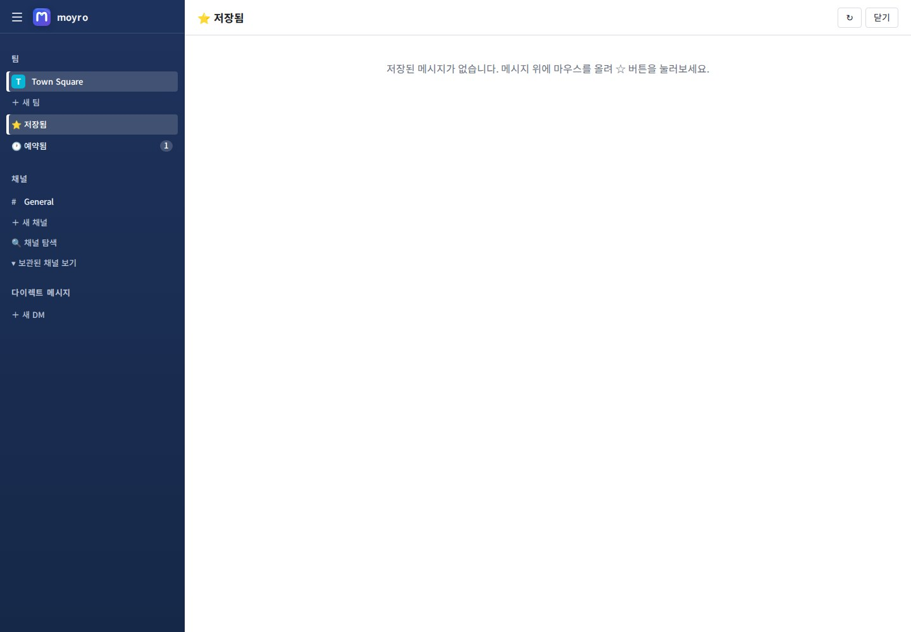
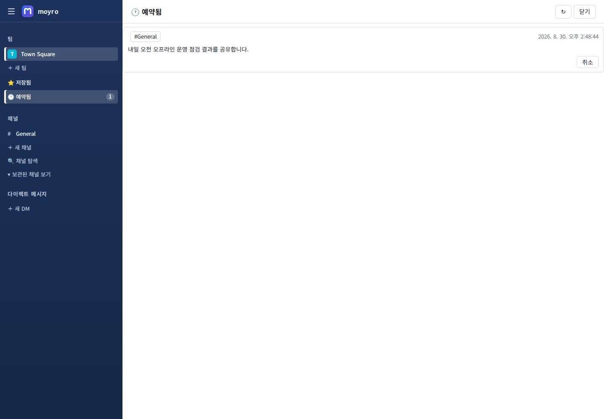
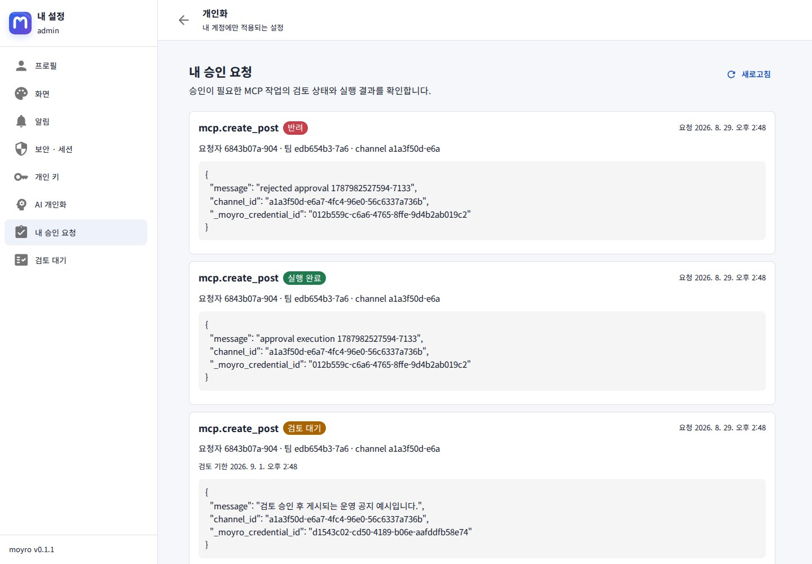
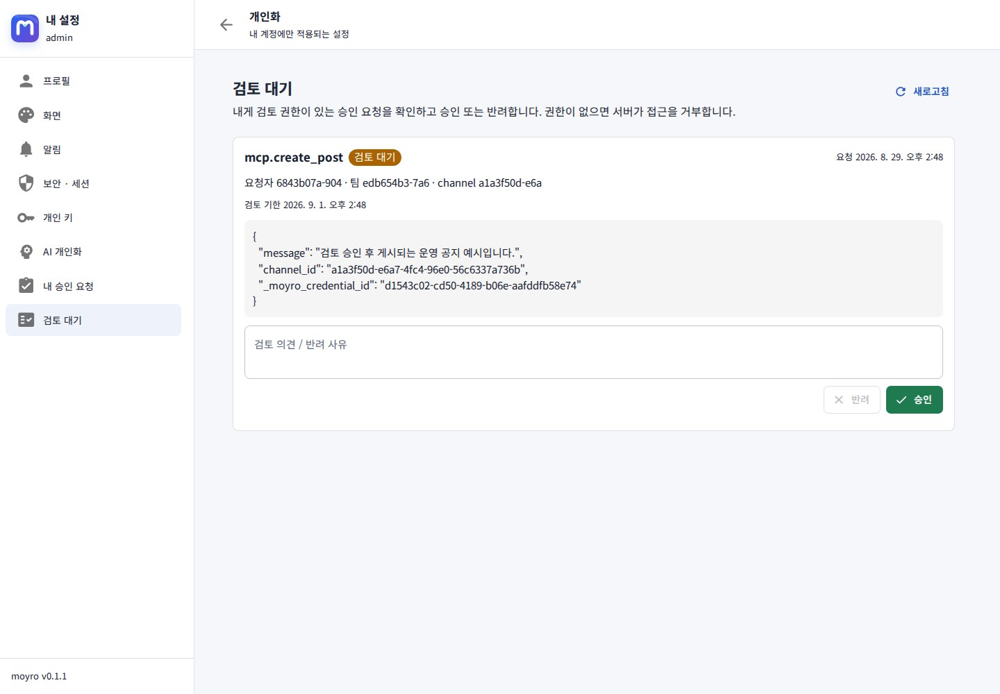

1. 로그인과 서비스 버전
관리자가 안내한 내부 moyro 주소를 엽니다. 이메일 또는 사용자명과 비밀번호로 로그인합니다. 관리자가 Keycloak OIDC를 활성화했다면 로그인 화면에 SSO 진입점도 표시됩니다.
로컬 회원가입이 닫힌 조직에서는 관리자가 발급한 초대 링크를 여세요. 링크에 지정된 워크스페이스를 확인한 뒤 12–72바이트 비밀번호로 계정을 만들 수 있습니다. 만료·폐기·사용 횟수 소진 링크는 가입에 사용할 수 없습니다.

로그인 뒤에는 오른쪽 위의 계정 메뉴 열기 버튼을 선택합니다. 프로필 컨텍스트 메뉴에서도 동일한 버전을 확인할 수 있습니다. 오류를 문의할 때 버전과 발생 시각을 함께 전달하세요.

2. 팀, 채널과 메시지
왼쪽 영역에서 팀과 채널을 선택하면 URL이 해당 위치로 바뀝니다. 브라우저를 새로고침해도 같은 채널 또는 개인 보기가 다시 열립니다. v0.1.1은 화면별 code chunk를 처음 열 때 불러오며, 그 짧은 동안에는 공통 로딩 상태를 표시합니다.
- 공개 채널: 참여 가능한 공개 대화 공간입니다.
- 비공개 채널: 멤버에게만 표시되는 공간입니다.
- DM·그룹 메시지: 한 명 또는 여러 명과 직접 대화합니다.
작성창에서 메시지와 파일을 보냅니다. 메시지의 답글 동작으로 스레드를 열고, 반응·수정·삭제·저장을 사용할 수 있습니다. 검색은 접근 권한이 있는 메시지만 대상으로 합니다.

3. 저장 글과 예약 메시지
중요한 메시지는 저장해 개인 목록에 모을 수 있습니다. 예약 메시지는 지정한 시각 전까지 전용 보기에서 확인하고 취소할 수 있습니다. 서버는 발송 시 worker lease와 결과 post ID를 사용해 장애 후 재시도에서도 같은 예약 건이 중복 게시되지 않도록 보호합니다.


4. 개인 설정
프로필 메뉴에서 개인 설정을 엽니다. 이 영역에는 내 프로필, 화면, 알림, 세션, 개인 키와 AI 개인화가 있습니다. 사이트 URL, Keycloak, AI 공급자처럼 조직 전체에 영향을 주는 값은 여기에 없습니다.

| 메뉴 | 용도 |
|---|---|
| 프로필 | 내 계정 정보 확인 |
| 화면 | 개인 표시 환경 |
| 알림 | 개인 알림 선호 |
| 세션 | 로그인 세션 확인과 종료 |
세션 목록은 로그인 bearer token을 노출하지 않고 서버의 session ID로 현재 세션을 식별합니다. 다른 장치의 세션을 종료한 경우 해당 장치에서는 다시 로그인해야 합니다.
5. 개인 키와 AI
개인 키 화면에서 관리자가 허용한 scope와 수명 안에서 API·MCP 키를 발급합니다. Secret은 생성 또는 회전 응답에서 한 번만 표시되므로 안전한 credential 저장소로 바로 옮기세요.

새 secret을 자동화에 반영하고 호출이 전환됐는지 확인한 뒤 이전 키를 폐기하세요. 관리자가 정한 유예시간 동안 이전 키가 유효할 수 있습니다.
AI 개인화는 관리자가 AI 공급자를 활성화했을 때 사용합니다. 공급자 endpoint, 모델과 최대 token은 서비스 관리 영역의 값이며, 사용자는 자신의 기본 선호만 관리합니다.

6. 선택적 검토와 승인
승인 메뉴는 항상 보이지 않습니다. 관리자가 MCP 게시 작업에 승인 정책을 활성화한 경우에만 내 승인 요청과, 검토 권한이 있는 사용자에게 검토 대기 화면이 나타납니다.


7. 문제가 생겼을 때
- 현재 URL을 새로고침해도 같은 메뉴가 열리는지 확인합니다.
- 연결 오류는 관리자에게 내부 네트워크와
/healthz확인을 요청합니다. - 채널이나 파일 접근 오류는 해당 채널 멤버십을 확인합니다.
- SSO 진입점이 없으면 관리자가 Keycloak을 활성화했는지 확인합니다.
- 문의 시 서비스 버전, 발생 시각, 현재 URL과 수행한 작업을 전달합니다.